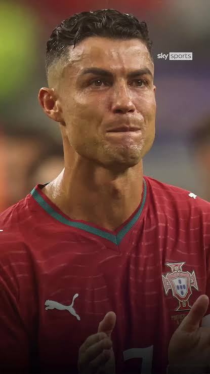

Cristiano Ronaldo dos Santos Aveiro born
February 1985 is a Portuguese professional footballer
who plays as a forward for and captains both the Saudi Pro League club
Al-Nassr and the Portugal national team. Nicknamed CR7,
he is widely regarded as one of the greatest footballers of all time.
He has won numerous individual accolades throughout his career, including
five Ballons d'Or, a record three UEFA Men's Player of the Year Awards,
and four European Golden Shoes. He was named the world's best player five
times by FIFA.
Ronaldo is one of the most decorated players in the history of
professional football.
His 35 trophies include five UEFA Champions Leagues, two UEFA Nations
Leagues and the UEFA European Championship . He is the only player to have scored 100 goals with four different
clubs and to finish as the top scorer in four different domestic
leagues.
He has made over 1,300 professional career appearances, the most by an
outfield player, and has scored over 980 official senior career goals for
club and country, making him the top goalscorer in the history of the
sport.
# 2003–2007: Development and breakthrough.
# 2007–2009: Collective and individual success and Ballon.
# 2009–2015: World record transfer and consecutive Ballon
d'Or wins.
# 2015–2018: All-time Champions League and Real
Madrid top scorer and fifth Ballon d'Or